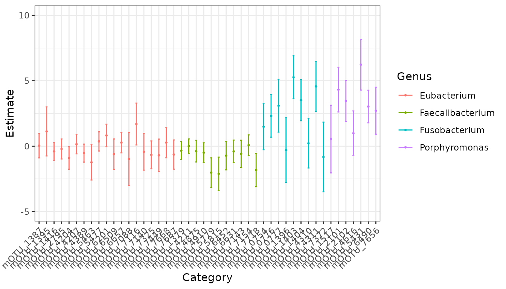
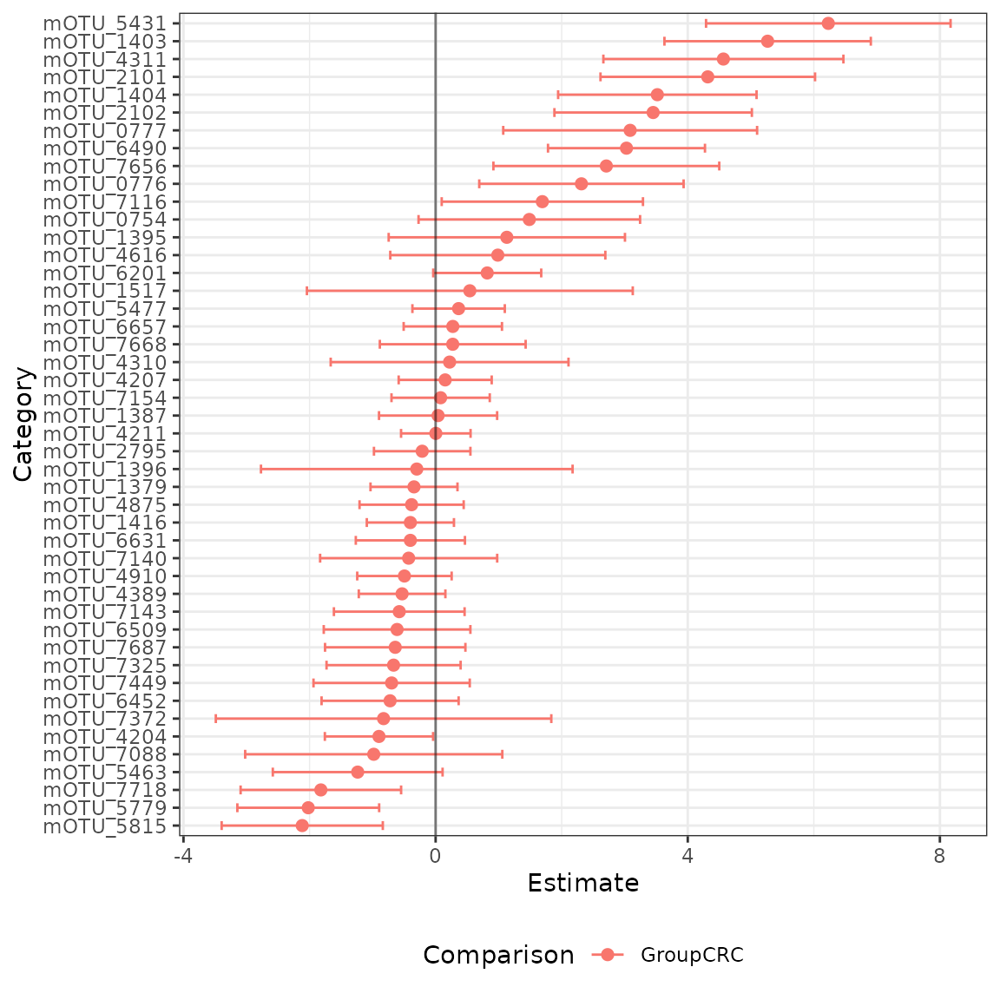

Introduction to radEmu
David Clausen, Sarah Teichman and Amy Willis
2025-03-27
Source:vignettes/intro_radEmu.Rmd
intro_radEmu.RmdFirst, we will install radEmu, if we haven’t
already.
# if (!require("remotes", quietly = TRUE))
# install.packages("remotes")
#
# remotes::install_github("statdivlab/radEmu")Next, we can load radEmu as well as the
tidyverse package suite.
Introduction
In this lab we’ll explore a dataset published by Wirbel et al. (2019). This is a meta-analysis of case-control studies, meaning that Wirbel et al. collected raw sequencing data from studies other researchers conducted and re-analyzed it (in this case, they also collected some new data of their own).
Wirbel et al. published two pieces of data we’ll focus on today:
- metadata giving demographics and other information about participants
- a mOTU (metagenomic OTU) table
In the manuscript, we looked at differential abundance across otherwise similar colorectal cancer and non-cancer control study participants for the 849 mOTUs that Wirbel et al. published. For the purpose of having a streamlined tutorial, we will only look at a subset of those 849 mOTUs in this vignette.
Loading and exploring data
We’ll start by looking at the metadata.
data("wirbel_sample")
dim(wirbel_sample)
#> [1] 566 14
head(wirbel_sample)
#> Sample_ID External_ID Age Gender BMI Country Study
#> CCIS00146684ST.4.0 CCIS00146684ST-4-0 FR-726 72 F 25 FRA FR-CRC
#> CCIS00281083ST.3.0 CCIS00281083ST-3-0 FR-060 53 M 32 FRA FR-CRC
#> CCIS02124300ST.4.0 CCIS02124300ST-4-0 FR-568 35 M 23 FRA FR-CRC
#> CCIS02379307ST.4.0 CCIS02379307ST-4-0 FR-828 67 M 28 FRA FR-CRC
#> CCIS02856720ST.4.0 CCIS02856720ST-4-0 FR-027 74 M 27 FRA FR-CRC
#> CCIS03473770ST.4.0 CCIS03473770ST-4-0 FR-192 29 M 24 FRA FR-CRC
#> Group Library_Size Age_spline.1 Age_spline.2 BMI_spline.1
#> CCIS00146684ST.4.0 CTR 35443944 -0.19755428 0.7389621 1.18982420
#> CCIS00281083ST.3.0 CTR 19307896 -0.08126128 -0.6818534 -1.40679307
#> CCIS02124300ST.4.0 CTR 42141246 -2.17453529 -0.6818534 0.45476676
#> CCIS02379307ST.4.0 CRC 4829533 0.67464323 -0.1490476 0.07698823
#> CCIS02856720ST.4.0 CTR 34294675 -0.54643328 1.0941660 0.44793355
#> CCIS03473770ST.4.0 CTR 20262319 -2.87229329 -0.6818534 0.95261443
#> BMI_spline.2 Sampling
#> CCIS00146684ST.4.0 -0.5606919 BEFORE
#> CCIS00281083ST.3.0 2.0039136 BEFORE
#> CCIS02124300ST.4.0 -0.6706035 BEFORE
#> CCIS02379307ST.4.0 0.5384247 BEFORE
#> CCIS02856720ST.4.0 0.1720525 BEFORE
#> CCIS03473770ST.4.0 -0.6706035 BEFOREWe can see that this dataset includes observations and variables. Let’s see how many observations we have among cases (“CRC”) and controls (“CTR”)
wirbel_sample %>%
group_by(Group) %>%
summarize(count = n())
#> # A tibble: 2 × 2
#> Group count
#> <chr> <int>
#> 1 CRC 278
#> 2 CTR 288We have data from studies in 5 different countries. How much from each study, you ask? Let’s find out!
wirbel_sample %>%
group_by(Country) %>%
summarize(count = n())
#> # A tibble: 5 × 2
#> Country count
#> <chr> <int>
#> 1 AUS 109
#> 2 CHI 126
#> 3 FRA 110
#> 4 GER 120
#> 5 USA 101Let’s see how many cases and controls were enrolled in each study as well.
wirbel_sample %>%
group_by(Country, Group) %>%
summarize(n = n())
#> `summarise()` has grouped output by 'Country'. You can override using the
#> `.groups` argument.
#> # A tibble: 10 × 3
#> # Groups: Country [5]
#> Country Group n
#> <chr> <chr> <int>
#> 1 AUS CRC 46
#> 2 AUS CTR 63
#> 3 CHI CRC 72
#> 4 CHI CTR 54
#> 5 FRA CRC 51
#> 6 FRA CTR 59
#> 7 GER CRC 60
#> 8 GER CTR 60
#> 9 USA CRC 49
#> 10 USA CTR 52Now let’s load the mOTU table.
data("wirbel_otu")
dim(wirbel_otu)
#> [1] 566 845
# let's check out a subset
wirbel_otu[1:5, 1:3]
#> Streptococcus anginosus [ref_mOTU_v2_0004]
#> CCIS00146684ST.4.0 0
#> CCIS00281083ST.3.0 0
#> CCIS02124300ST.4.0 2
#> CCIS02379307ST.4.0 0
#> CCIS02856720ST.4.0 1
#> Enterobacteriaceae sp. [ref_mOTU_v2_0036]
#> CCIS00146684ST.4.0 3
#> CCIS00281083ST.3.0 0
#> CCIS02124300ST.4.0 5
#> CCIS02379307ST.4.0 5
#> CCIS02856720ST.4.0 675
#> Citrobacter sp. [ref_mOTU_v2_0076]
#> CCIS00146684ST.4.0 0
#> CCIS00281083ST.3.0 0
#> CCIS02124300ST.4.0 0
#> CCIS02379307ST.4.0 0
#> CCIS02856720ST.4.0 0We can see that this table has samples (just like the metadata) and mOTUs. Let’s save these mOTU names in a vector.
mOTU_names <- colnames(wirbel_otu)Fitting a model
radEmu is a package that can be used to estimate
fold-differences in the abundance of microbial taxa between levels of a
covariate. In this analysis, the covariate that we are primarily
interested in is whether a sample is from a case of colorectal cancer or
a control. We will make control (“CTR”) the reference category:
While in general we would fit a model to all mOTUs, we are going to subset to some specific genera for the purposes of this tutorial. Let’s look at Eubacterium, Porphyromonas, Faecalibacteria, and Fusobacterium for now.
chosen_genera <- c("Eubacterium", "Faecalibacterium", "Fusobacterium", "Porphyromonas")
mOTU_name_df <- data.frame(name = mOTU_names) %>%
mutate(base_name = stringr::str_remove(mOTU_names, "unknown ") %>%
stringr::str_remove("uncultured ")) %>%
mutate(genus_name = stringr::word(base_name, 1))
restricted_mOTU_names <- mOTU_name_df %>%
filter(genus_name %in% chosen_genera) %>%
pull(name)Again, while we would generally fit a model using all of our samples, for this tutorial we are only going to consider data from a case-control study from China.
Next, we want to confirm that all samples have at least one non-zero count across the categories we’ve chosen and that all categories have at least one non-zero count across the samples we’ve chosen.
small_Y <- wirbel_otu[ch_study_obs, restricted_mOTU_names]
sum(rowSums(small_Y) == 0) # no samples have a count sum of 0
#> [1] 0
sum(colSums(small_Y) == 0) # one category has a count sum of 0
#> [1] 1
category_to_rm <- which(colSums(small_Y) == 0)
small_Y <- small_Y[, -category_to_rm]
sum(colSums(small_Y) == 0)
#> [1] 0The function that we use to fit our model is called
emuFit. It can accept your data in various forms, and here
we will show how to use it with data frames as input. Check out the
phyloseq vignette if you’d like to know how
radEmu plays with phyloseq objects! One
version of inputs to emuFit are
-
formula: This is a formula telling radEmu what predictors to use in its model. We are using Group, which is an indicator for case (CRC) vs control (CTR). -
data: A dataframe containing information on our predictors. Recall that here we’re only looking observations from the Chinese study. -
Y: A matrix or dataframe containing our observed abundance data (e.g., counts or depth measurements). The rows give the observations (samples), and the columns give the categories (taxa/mOTUs). Here we are only considering the observations from the Chinese study and the Eubacterium, Porphyromonas, Faecalibacteria, and Fusobacterium genera. Note thatYdoesn’t have to be integer-valued (counts)!
and some optional arguments include
-
run_score_tests: A logical value denoting whether or not to run score tests. Score tests are awesome in their error rate control (including with small sample sizes; though of course larger sample sizes always give better power), but require refitting the model, so can require some compute time.
ch_fit <- emuFit(formula = ~ Group,
data = wirbel_sample[ch_study_obs, ],
Y = small_Y,
run_score_tests = FALSE) Let’s check out what this object looks like!
ch_fit
#>
#> Call:
#> emuFit(Y = small_Y, formula = ~Group, data = wirbel_sample[ch_study_obs,
#> ], run_score_tests = FALSE)
#>
#>
#> Coefficient estimates with the largest magnitudes:
#> covariate category
#> 24 GroupCRC unknown Porphyromonas [meta_mOTU_v2_5431]
#> 8 GroupCRC Fusobacterium sp. oral taxon 370 [ref_mOTU_v2_1403]
#> 19 GroupCRC Fusobacterium varium [ref_mOTU_v2_4311]
#> 12 GroupCRC Porphyromonas somerae [ref_mOTU_v2_2101]
#> 9 GroupCRC Fusobacterium gonidiaformans [ref_mOTU_v2_1404]
#> 13 GroupCRC Porphyromonas uenonis [ref_mOTU_v2_2102]
#> 3 GroupCRC Fusobacterium nucleatum s. nucleatum [ref_mOTU_v2_0777]
#> 31 GroupCRC unknown Porphyromonas [meta_mOTU_v2_6490]
#> 43 GroupCRC unknown Porphyromonas [meta_mOTU_v2_7656]
#> 2 GroupCRC Fusobacterium nucleatum s. animalis [ref_mOTU_v2_0776]
#> 28 GroupCRC unknown Faecalibacterium [meta_mOTU_v2_5815]
#> 27 GroupCRC unknown Faecalibacterium [meta_mOTU_v2_5779]
#> 46 GroupCRC unknown Faecalibacterium [meta_mOTU_v2_7718]
#> 36 GroupCRC unknown Eubacterium [meta_mOTU_v2_7116]
#> 1 GroupCRC Fusobacterium nucleatum s. vincentii [ref_mOTU_v2_0754]
#> 25 GroupCRC unknown Eubacterium [meta_mOTU_v2_5463]
#> 6 GroupCRC Eubacterium sp. [ref_mOTU_v2_1395]
#> 21 GroupCRC Porphyromonas uenonis [ref_mOTU_v2_4616]
#> 35 GroupCRC Eubacterium sp. CAG:581 [meta_mOTU_v2_7088]
#> 15 GroupCRC Eubacterium ventriosum [ref_mOTU_v2_4204]
#> category_num estimate se lower upper
#> 24 24 6.2298815 0.9896555 4.29019247 8.16957058
#> 8 8 5.2672067 0.8352017 3.63024151 6.90417195
#> 19 19 4.5652857 0.9714733 2.66123301 6.46933841
#> 12 12 4.3176588 0.8683653 2.61569416 6.01962339
#> 9 9 3.5175395 0.8030406 1.94360888 5.09147007
#> 13 13 3.4508481 0.7990141 1.88480931 5.01688688
#> 3 3 3.0864020 1.0274037 1.07272775 5.10007627
#> 31 31 3.0279912 0.6352260 1.78297115 4.27301134
#> 43 43 2.7082209 0.9140368 0.91674164 4.49970009
#> 2 2 2.3131683 0.8270260 0.69222720 3.93410949
#> 28 28 -2.1162233 0.6522106 -3.39453255 -0.83791411
#> 27 27 -2.0205819 0.5738727 -3.14535163 -0.89581214
#> 46 46 -1.8206852 0.6495036 -3.09368882 -0.54768155
#> 36 36 1.6929902 0.8145007 0.09659813 3.28938223
#> 1 1 1.4863759 0.8965269 -0.27078456 3.24353643
#> 25 25 -1.2363804 0.6871052 -2.58308180 0.11032097
#> 6 6 1.1295208 0.9562351 -0.74466558 3.00370723
#> 21 21 0.9864200 0.8704039 -0.71954033 2.69238029
#> 35 35 -0.9817362 1.0405201 -3.02111805 1.05764560
#> 15 15 -0.8986601 0.4381018 -1.75732384 -0.03999633
#> To obtain the entire coefficient table, use the command `emuFit_object$coef`.Now, we can easily visualize our results using the plot
function! So that we only produce the plot, and not the dataframe used
to produce the plots, we will explicitly extract the plots using the
$ operator to get the plots component.
plot(ch_fit)$plots
#> $p1
In the plot above, it is a bit difficult to read the taxa names on the y-axis. We can create a data frame that maps the full taxa names in our data to simplified labels and plot using those instead, as shown below.
#create data frame that has simplified names for taxa
taxa_names <- data.frame("category" = ch_fit$coef$category) %>%
mutate(cat_small = stringr::str_remove(paste0("mOTU_",
stringr::str_split(category, 'mOTU_v2_', simplify = TRUE)[, 2]),
"\\]"))
#produce plot with cleaner taxa labels
plot(ch_fit, taxon_names = taxa_names)$plots
#> $p1
Interestingly, we estimate a meta-mOTU “unknown Eubacterium [meta_mOTU_v2_7116]” assigned to Eubacteria to have a much higher ratio of abundance (comparing CRC group to control) than is typical across the mOTUs we included in this analysis.
The confidence interval for this effect does not include zero – but (!!!) the kind of confidence interval that is returned by default by emuFit is not extremely reliable when counts are very skewed or sample size is small-to-moderate.
To investigate further, let’s run a robust score test, which is more reliable in these settings (but also takes more time because apparently we can’t have nice things). For comparison, we’ll also test the mOTU “Fusobacterium nucleatum s. nucleatum [ref_mOTU_v2_0777]”, which we also estimate to have a much larger ratio of concentrations across groups than is typical among the taxa we included in this model fit.
To set up this test, we can again run emuFit, giving it
the fitted values that it’s already found:
-
formula,dataandYare as before -
Bis our previous fitted object (the output ofemuFit) -
test_kja dataframe listing the indices of the parameters (inch_fit$B) that we want to test. Below we show how to identify these, butj = 3is F. nucleatum andj = 36is the Eubacterium meta mOTU. Note that whiletest_kjwas an optional argument in previous software versions, inradEmuv2.0.0.0 and forwardtest_kjis required whenrun_score_tests = TRUE.
taxa_to_test <- c(which(str_detect(restricted_mOTU_names, "0777")),
which(str_detect(restricted_mOTU_names, "7116")))
design <- make_design_matrix(formula = ~ Group, data = wirbel_sample[ch_study_obs, ])
colnames(design)
#> [1] "(Intercept)" "GroupCRC"
covariate_to_test <- 2 # we see in the previous line that the covariate we care about corresponds to the second column of the design matrix
ch_fit$B %>% rownames
#> [1] "(Intercept)" "GroupCRC"
two_robust_score_tests <- emuFit(formula = ~ Group,
data = wirbel_sample[ch_study_obs, ],
B = ch_fit$B,
test_kj = data.frame(k = covariate_to_test,
j = taxa_to_test),
Y = small_Y)Let’s take a look at the test output.
two_robust_score_tests$coef[taxa_to_test, c("covariate", "category", "estimate", "pval")]
#> covariate category estimate
#> 3 GroupCRC Fusobacterium nucleatum s. nucleatum [ref_mOTU_v2_0777] 3.086402
#> 36 GroupCRC unknown Eubacterium [meta_mOTU_v2_7116] 1.692991
#> pval
#> 3 0.07423599
#> 36 0.30168308The Fusobacterium nucleatum mOTU has a robust score test p-value of 0.07, while the unknown Eubacterium mOTU has a robust score test p-value of 0.3. Does this make sense? Let’s investigate further by looking at the Eubacterium mOTU counts by Group.
data.frame(counts = wirbel_otu[ch_study_obs, "unknown Eubacterium [meta_mOTU_v2_7116]"],
group = wirbel_sample$Group[ch_study_obs]) %>%
mutate(eubact_present = counts > 0) %>%
group_by(group, eubact_present) %>%
count()
#> # A tibble: 3 × 3
#> # Groups: group, eubact_present [3]
#> group eubact_present n
#> <fct> <lgl> <int>
#> 1 CTR FALSE 54
#> 2 CRC FALSE 71
#> 3 CRC TRUE 1We only detect this meta-mOTU in a single sample in the Chinese study
cohort! So, yes – it makes sense that our test returns a relatively
large p-value. Good job, emuFit!
Now let’s look at F. nucleatum.
data.frame(counts = wirbel_otu[ch_study_obs,
"Fusobacterium nucleatum s. nucleatum [ref_mOTU_v2_0777]"],
group = wirbel_sample$Group[ch_study_obs]) %>%
mutate(fuso_present = counts > 0) %>%
group_by(group, fuso_present) %>%
count()
#> # A tibble: 4 × 3
#> # Groups: group, fuso_present [4]
#> group fuso_present n
#> <fct> <lgl> <int>
#> 1 CTR FALSE 53
#> 2 CTR TRUE 1
#> 3 CRC FALSE 59
#> 4 CRC TRUE 13This also makes sense given what we found – F. nucleatum shows up in a sizeable minority of CRC cases, whereas Wirbel et al detect it in only one control participant.
We could run robust score tests for every taxon in this analysis, but it will take a longer amount of time to run. The code below will not run in the vignette, but feel free to run it on your own.
test_all <- emuFit(formula = ~ Group,
data = wirbel_sample[ch_study_obs, ],
B = ch_fit,
Y = small_Y,
run_score_tests = TRUE)A more reasonable model
In the above analysis, we provided a basic illustration of our method looking at a small number of taxa, in a subset of samples (one study out of five). However, if we we’re truly interested in identifying taxa that are unusually abundant in either CRC cases or controls, it would make sense to compare across study populations that are similar in their sex, age, BMI, country and whether the samples were provided before undergoing colonoscopy or after. That’s what we did in our manuscript! Code to fit this model is below.
all_fit <- emuFit(formula = ~ Group + Study + Gender +
Age_spline.1 + Age_spline.2 +
BMI_spline.1 + BMI_spline.2 + Sampling,
data = wirbel_sample,
Y = wirbel_otu[, restricted_mOTU_names],
run_score_tests = FALSE)Note that we wanted to allow in non-linear trends in age and BMI, which we did using B-splines. If you’re interested in doing something similar, you could adapt the code below.
age_spline <- splines2::bSpline(wirbel_sample$Age, degree = 1, knots = median(wirbel_sample$Age))
age_spline[,1] <- (age_spline[,1] - mean(age_spline[,1]))/sd(age_spline[,1])
age_spline[,2] <- (age_spline[,2] - mean(age_spline[,2]))/sd(age_spline[,2])
bmi_spline <- splines2::bSpline(wirbel_sample$BMI, degree = 1, knots = median(wirbel_sample$BMI))
bmi_spline[,1] <- (bmi_spline[,1] - mean(bmi_spline[,1]))/sd(bmi_spline[,1])
bmi_spline[,2] <- (bmi_spline[,2] - mean(bmi_spline[,2]))/sd(bmi_spline[,2])